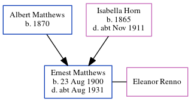

Ernest George Matthews 1900 - c1931
[ Home ] | [ Calendar ] | [ Surnames Index ] | [ Census Index ] | [ Family History ]The child of Albert Matthews (a mariner) and Isabella Horn, Ernest Matthews, the second cousin twice-removed on the father's side of Nigel Horne, was born in Ramsgate, Kent, England on Aug 23, 19001,2,3 and baptized there at Christ Church, Vale Square on Nov 20, 1900. He married Eleanor Renno in Thanet, Kent, England around May 19245. On Apr 2, 1911, he was living at Royal Road in Ramsgate1.
He died c. Aug 1931 in Thanet4.
Parents
- Albert was born in 1870
- Isabella was born in 1865
Citations
- 1911 Census for England & Wales - Findmypast (was age 10 and the son of the head of the household)
- England & Wales births 1837-2006 - Findmypast
- Kent Baptisms - Findmypast
- England & Wales deaths 1837-2007 - Findmypast
- England & Wales Marriages 1837-2005 - Findmypast
Media
England & Wales births 1837-2006 - BMD/B/1900/4/AZ/000370/177
England & Wales marriages 1837-2005 - BMD/M/1924/2/AZ/000786/026
Kent, Canterbury Archdeaconry baptisms - GBPRS/CANT/B/96524072
England & Wales deaths 1837-2007 - BMD/D/1931/3/AZ/000524/080
Family Tree
Generated by ged2site. Last updated on Jun 11, 2024